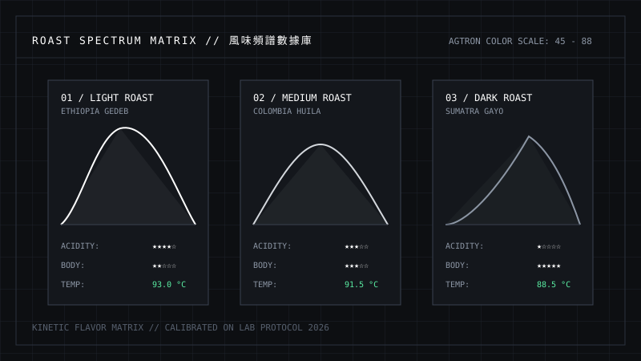

LIGHT ROAST
AGTRON 78/88
淺焙・花果調
衣索比亞 水洗 // GEDEB G1
茉莉白花
佛手柑
水蜜桃酸質
透過科學數據挑選適合你的風味光譜。我們將微氣候、海拔高度、處理工藝與溫升速率（RoR）轉化為透明指針，為你建構可預期的純粹風味體驗。

依照產區特色與密度設定專屬烘焙能量曲線，劃分淺焙、中焙與深焙三大光譜。
由實驗室經過反覆折射率檢測確定的黃金萃取區間，建議使用等溫手沖壺與高精度電子秤進行操作。
| 參數指標 (PARAMETER) | 淺焙・花果調 (LIGHT) | 中焙・堅果焦糖 (MEDIUM) | 深焙・黑巧煙燻 (DARK) |
|---|---|---|---|
| 建議粉水比 (RATIO) | 1 : 15.5 | 1 : 15.0 | 1 : 14.0 |
| 研磨刻度 (MAHLKÖNIG EK43) | # 8.2 (細中) | # 8.8 (中等) | # 9.5 (中粗) |
| 標準水溫 (WATER TEMP) | 93.0 °C | 91.5 °C | 88.5 °C |
| 悶蒸預浸量與時間 (BLOOM) | 40ml / 35 秒 | 40ml / 30 秒 | 40ml / 25 秒 |
| 總萃取時間 (EXTRACTION TIME) | 02 分 15 秒 | 02 分 05 秒 | 01 分 55 秒 |
| 預期總萃取量 (TOTAL YIELD) | 248 ml | 240 ml | 252 ml |
| 建議品飲溫度 (DRINKING TEMP) | 62.0 °C - 65.0 °C | 60.0 °C - 63.0 °C | 58.0 °C - 62.0 °C |